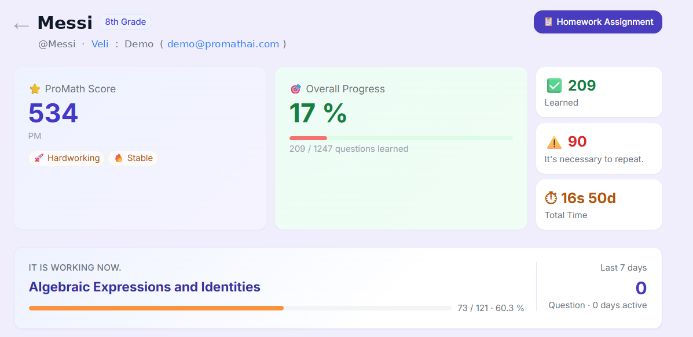
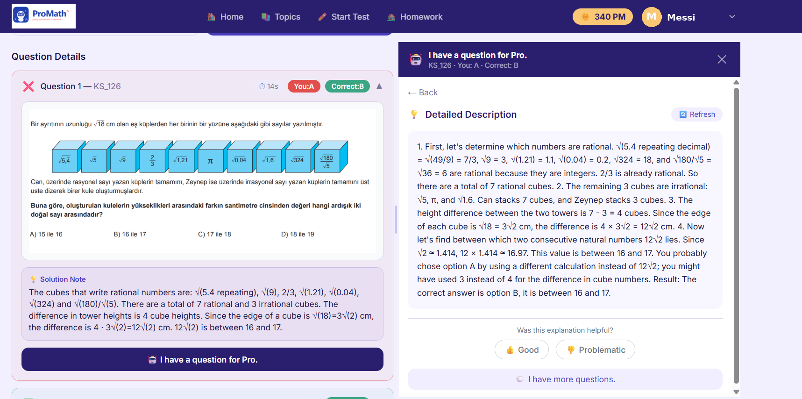
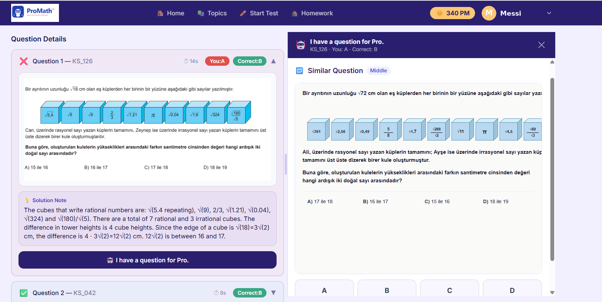
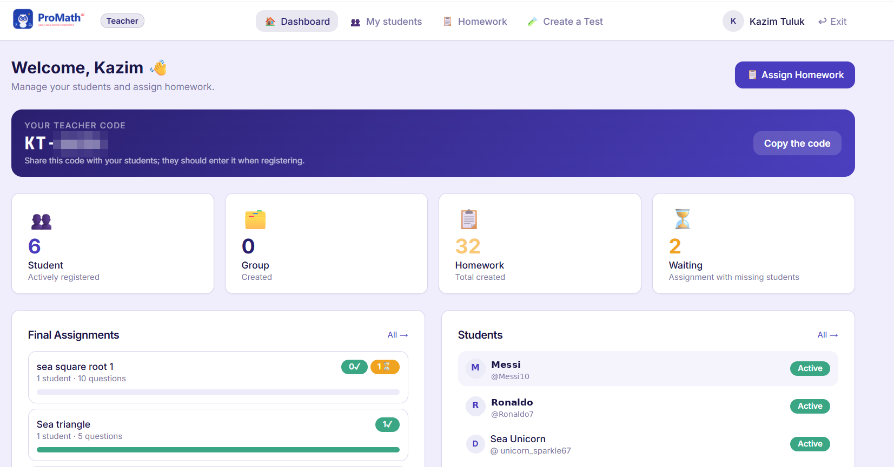

Every year, hundreds of thousands of Grade 8 students in Türkiye prepare for the national high-school entrance exam. Preparation runs on practice tests, and practice tests run on feedback. In fourteen years of teaching mathematics, I watched the same failure mode on repeat: a student answers a question wrong on Tuesday evening and finds out why on Thursday, if the teacher has time. By then, the misconception has had two days to settle in.
The requirement behind the product, in one sentence: a student who gets a question wrong should understand why within a minute, not within a week.
I approached this as an analysis problem before a software problem, mapping three stakeholder groups and what each needed:
These translated into functional requirements: an item bank organized by topic, AI-generated explanations for every question, adaptive question generation targeting weak topics, mastery tracking, and separate role-based experiences for students and teachers.
ProMathAI is a web platform where students take practice tests from a question bank of 1,252 items and counting. A wrong answer triggers a step-by-step AI explanation on the spot. The system tracks mastery by topic, generates new questions adapted to each student's weak areas, and adds gamification and homework flows to keep practice going. Teachers join through code-based registration and contribute their own content through a structured upload process.




The platform runs on an integrated set of managed services: a PostgreSQL database for the item bank and user data, Cloudflare R2 with a CDN for question images, an AI API for explanations and question generation, transactional email for account flows, and hosting pipelines that deploy from GitHub. I configured and maintain each integration, and documented the architecture, the deployment workflow, and the reasoning behind every major design decision in a technical report, so that anyone returning to the system later, including me, can see not just what was decided but why.
Access control was designed as part of the requirements, not bolted on: role-based student and teacher accounts, code-based registration so teachers onboard in a controlled way, and a secure password-reset workflow.
Before each release I run multi-level test scenarios: API endpoint validation, cross-device and cross-browser checks, and end-to-end passes through registration and password-reset flows. Production has already provided its own lessons; when a scoring issue appeared after launch, root cause analysis traced it to a data-type mismatch, and the fix shipped from a backlog I keep prioritized by risk and effort.
Running a live product means the analysis never stops: every user complaint is a requirements-gathering session, and every incident is a root-cause exercise.
The roadmap continues from that same backlog: each candidate improvement is rated for impact and effort before it earns a place in the queue.